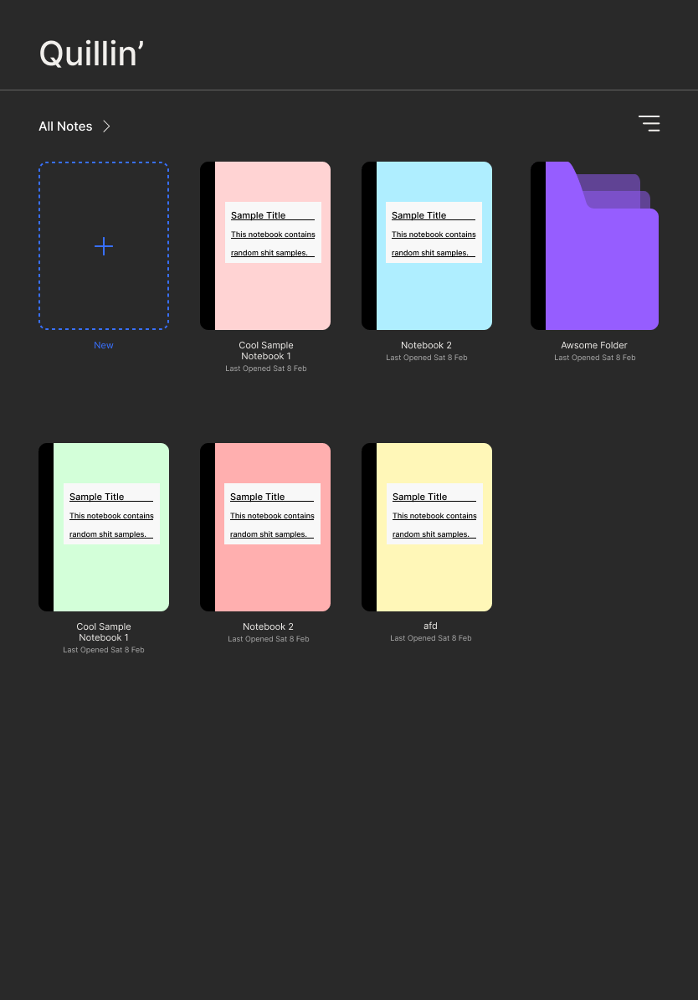
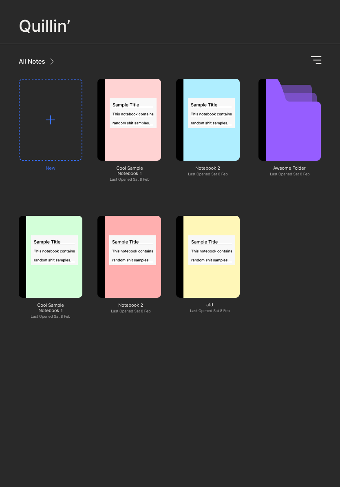

Quillin' is an iOS handwriting note app with OCR and LLM-based question-asking, built with Swift and FastAPI.
Standardized Interface & Mental Models
Following UI conventions from apps like Notability and GoodNotes aligns with Jakob’s Law—users prefer familiar designs. The use of pre-existing mental models reduces cognitive load, making the app intuitive. Standardized layouts enhance usability by matching user expectations, preventing unnecessary confusion.

LLM Interface Placement: Space & Accessibility
Vertical Mode
Embedding a retractable LLM interface follows Fitts’s Law, optimizing ease of access without cluttering the canvas. A collapsible design ensures the chatbot is available when needed while maintaining focus on note-taking.
Landscape Mode
A side-slide-out chatbot aligns with ergonomic habits—users don’t fully utilize horizontal space when writing notes by hand, especially on the side of their dominant hand.
Simplifying Interaction: Minimizing Effort
While writing notes with Quillin’, you ask the chatbot a question, but the response doesn’t fully meet your needs. In a crowded lecture hall with small fold-up desks, setting down your Apple Pencil to type a follow-up may not be practical. To address this, we designed an implementation that presents three AI-suggested clarifying questions, anticipating what you’re likely to ask.
UX Strategy
Our design applies Jakob’s Law for familiarity, Fitts’s Law for chatbot accessibility, and simplicity principles for interaction, creating a seamless experience. Retractable and slide-out elements respect different orientations while keeping AI assistance unobtrusive. By grounding these choices in UX laws, your design is both intuitive and defensible for future iterations.
Check out the Figma wireframe and our Hackathon submission


 
